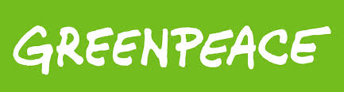
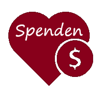

Greenpeace steht für Unbestechlichkeit - weder Geld noch politischer Druck können die Organisation beeinflussen. Denn Greenpeace lässt sich nicht sponsern: Wir arbeiten unabhängig von Regierungen, Parteien und wirtschaftlichen Interessengruppen. Greenpeace lässt sich auch keine Projekte von der EU oder der UNO finanzieren. Das unterscheidet uns ganz wesentlich von vielen anderen, die sich für Geld von Industrie oder Politik abhängig machen. Greenpeace legt sich auch mit den größten Konzernen an - wer traut sich das heute noch? In Zeiten zunehmender Globalisierung ist Internationalität unverzichtbar - und eine besondere Stärke von Greenpeace. Die Organisation ist mittlerweile in 26 Ländern vertreten und in mehr als 55 Ländern aktiv. Die dafür notwendige finanzielle Unabhängigkeit und politische Durchschlagskraft gewährleisten weltweit mehr als drei Millionen Unterstützer. Allein in Deutschland sind es heute rund 590.000 Menschen, die als Fördermitglieder regelmäßig an Greenpeace spenden.
GEWALTFREIE AKTIONEN GEGEN UMWELTVERBRECHEN Um Probleme aufzuzeigen, auf Missstände aufmerksam zu machen und positive Veränderungen einzufordern und herbeizuführen ist für Greenpeace die gewaltfreie direkte Aktion neben anderen Formen der Öffentlichkeitsarbeit ein wichtiges Mittel. Greenpeace konfrontiert mit gewaltfreien Aktionen diejenigen, die Umweltschäden verursachen oder zu verantworten haben - wenn möglich am Ort des Umweltverbrechens. Der provozierende, kämpferische und wenn nötig konfrontative Charakter, das kompromisslose, mutige aber stets gewaltfreie Vorgehen unter vollem persönlichen Einsatz und Risiko ist das Ungewöhnliche an Greenpeace.
Strategie:Greenpeace bringt nicht nur Umweltskandale ans Licht der Öffentlichkeit, sondern benennt Alternativen und entwickelt Lösungen. So beweist die Organisation immer wieder, dass es anders geht - oftmals sehr zum Ärger der Industrie. Drei von vielen Beispielen:
Greenpeace fördert die Weiterentwicklung der Gesellschaft weit über die Umweltproblematik hinaus. Die Organisation ist dabei manchmal auch frech, aber doch ungemein nützlich. Immer wieder gibt es dafür anerkennendes Lob von namhafter Stelle, beispielsweise der UNO, Weltbank oder Regierungen und Behörden. Und zu Recht steht Greenpeace nicht nur im Dienst der Gemeinnützigkeit, sondern bekommt diese auch von staatlicher Seite anerkannt.
SORGFÄLTIGE RECHERCHE UND BEWUSSTSEINSWANDEL Die Basis der Greenpeace-Arbeit ist sorgfältige Recherche. So können Probleme - aber auch die Lösungen dafür - frühzeitig aufgezeigt werden, damit sie rechtzeitig beachtet und bewältigt werden können. Greenpeace leistet deshalb auch eine umfassende Aufklärungsarbeit im parlamentarischen Bereich und setzt sich kritisch mit dem Einfluss von Lobbygruppen auf die Politik auseinander. Wichtiger Ort dafür ist die politische Vertretung von Greenpeace in Berlin. Die Organisation inspiriert so auf vielen Ebenen der Gesellschaft zu mehr Verantwortung für den Planeten und treibt den Bewusstseinswandel voran. Kooperationen mit Dritten sind dabei möglich, sofern dies tatsächlich hilft. Die Unabhängigkeit von Greenpeace darf dadurch aber nicht berührt werden.
RECHTE UNSERER UMWELT VERTEIDIGEN Für Natur und Umwelt gibt es nach wie vor keinen ausreichenden Rechtsschutz. Landschaftsverbrauch, nachhaltige Umweltbelastungen und kurzfristige Wirtschaftsinteressen haben häufig noch Vorrang. Wo zum Schutz der hochrangigen Rechtsgüter Menschenrechte und Umweltschutz kein effektiver Rechtsschutz zur Verfügung steht, dürfen diese Rechte unmittelbar verteidigt werden. Für Greenpeace ist es Pflicht, fundamentale Lebensrechte und damit die Lebensgrundlagen auch nachfolgender Generationen zu verteidigen und dabei notfalls in Konflikt mit bestehenden, untergeordneten Rechtsnormen zu geraten. Greenpeace-Aktivisten sind deshalb nach sorgfältiger Abwägung bereit zu zivilem Ungehorsam. Greenpeace nimmt die in offenen demokratischen Gesellschaften anerkannten Konfliktrechte wahr, um Konflikte gegen Regierungen und Unternehmen öffentlich auszutragen. Die Organisation trägt durch dieses Vorgehen nicht unwesentlich zur sogenannten Rechtsfortbildung, also zu positiven Veränderungen beim rechtlichen Schutz der Umwelt bei. Was Greenpeace einst anprangerte, wird heute von Behörden als gesetzeswidrig verfolgt - etwa die Giftmüllentsorgung in Entwicklungsländer, die Verwendung von hormonschädigenden Schiffsanstrichen und die Nicht-Kennzeichnung von Gen-Lebensmitteln.